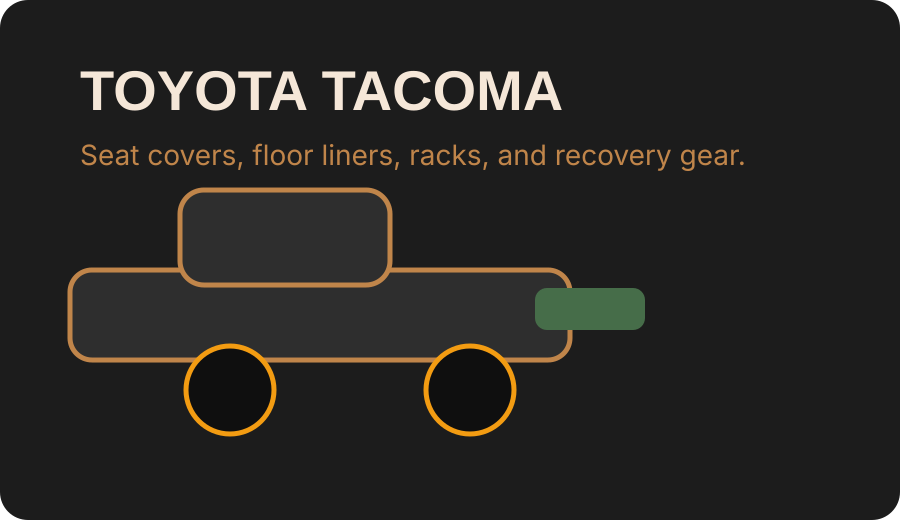

The Tacoma is the platform that convinced a generation to take mid-size trucks seriously.

If you own one, you already know it. The real question is which accessories actually improve the truck versus which ones just take up money.
Interior — Seat Covers
Bartact Tactical Seat Covers — Tacoma

Bartact is the best seat cover option for Tacoma owners and it is not close. Made in Temecula, California from mil-spec fabric with full SRS airbag compatibility, these covers are built for the way Tacoma owners actually use their trucks. Mud, dogs, work gear, trail days — they handle it.
✓ Pros
- USA-made with mil-spec fabric
- Full SRS airbag compatibility
- Berry Compliant materials
- Lifetime durability level
✗ Cons
- Expensive upfront
- Not for owners who never leave pavement
- Install is not quick
Skid Plates — TRD Pro
TRD Pro Skid Plate Set
For Tacomas that actually go off-road, the TRD Pro skid plate set is the factory-quality answer. It protects the oil pan, transfer case, and front undercarriage without the fitment guesswork of aftermarket alternatives.
✓ Pros
- OEM quality and fitment
- Proven off-road protection
- Clean Tacoma aesthetic
✗ Cons
- Pricey for what it is
- Only covers main components
- Heavy
Roof Racks — Prinsu
Prinsu Design Studio Tacoma Roof Rack
Prinsu makes the best Tacoma roof rack because it is purpose-built for the Gen 3 body style, lightweight enough to not destroy fuel economy, and designed to work with bed rack setups rather than against them.
✓ Pros
- Excellent load capacity
- Clean look and good aerodynamics
- Works with bed rack combos
✗ Cons
- Expensive
- Requires specific trim kit for best fit
- Drilling sometimes required
Bed Rack Systems
Battle Rails Tacoma Bed Rack
A bed rack turns a Tacoma into an overlanding platform. Battle Rails makes one of the cleaner options that works with most tonneau covers and mounting configurations.
✓ Pros
- Good load rating
- Works with tonneau covers
- Clean Tacoma match
✗ Cons
- Heavy
- Requires careful mounting
- Wind noise at highway speed
Floor Mats
WeatherTech FloorLiner — Tacoma
WeatherTech is the standard recommendation for Tacoma floor mats because the fitment is consistently tight and the containment walls actually work. ASIN B07GXJLNKP covers the front rows for most Tacoma configurations.
✓ Pros
- Best-in-class fitment
- Strong containment
- Easy to clean
✗ Cons
- Premium price
- Not the softest underfoot
Husky Liners WeatherBeater — Tacoma
Husky Liners is usually the better value play when the fitment is comparable. ASIN B07BFHXZWQ is the standard Husky option for the Tacoma front floor.
✓ Pros
- Strong value
- Good fit
- Slightly softer material
✗ Cons
- Less premium look
- Vehicle-to-vehicle fit varies
Recovery Boards
MAXTRAX MKII Recovery Boards
MAXTRAX is the standard for serious Tacoma off-road recovery. They work in sand, mud, and snow and have the build quality to survive being buried and dragged repeatedly.
✓ Pros
- Proven traction performance
- Durable construction
- Standard mount compatibility
✗ Cons
- Expensive
- Bulky to mount
- Overkill for street-only trucks
X-BULL Recovery Tracks
X-BULL is the budget option that still works for lighter Tacomas or owners who do not plan to recover from deep sand regularly. They cost a fraction of MAXTRAX.
✓ Pros
- Much lower cost
- Acceptable for light off-road use
- Good emergency backup
✗ Cons
- Less durable under heavy trucks
- More flex under load
The Tacoma Bottom Line
Bartact seat covers are the first and most important Tacoma accessory purchase for owners who actually use their trucks. After that, a Prinsu rack and quality floor mats are the highest-value upgrades. For off-road builds, add MAXTRAX and the TRD skid plates when the budget allows.
Shop Tacoma Covers →